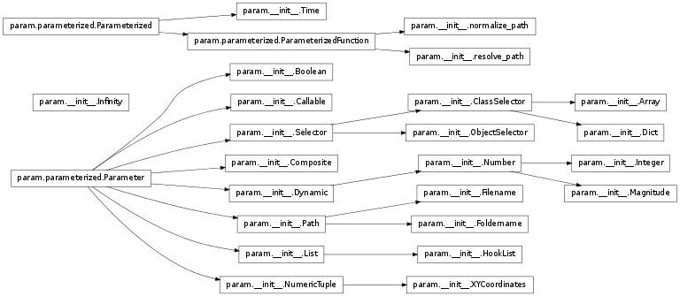
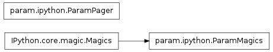
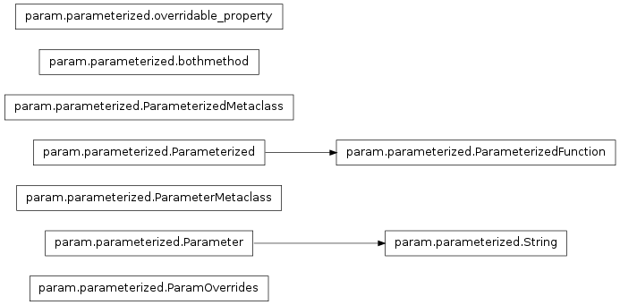

param.param Package¶
param Package¶

Parameters are a kind of class attribute allowing special behavior, including dynamically generated parameter values, documentation strings, constant and read-only parameters, and type or range checking at assignment time.
Potentially useful for any large Python program that needs user-modifiable object attributes; see the parameterized.Parameter and parameterized.Parameterized classes for more information.
This file contains subclasses of Parameter, implementing specific parameter types (e.g. Number).
- param.__init__.Callable[source]¶
Parameter holding a value that is a callable object, such as a function.
A keyword argument instantiate=True should be provided when a function object is used that might have state. On the other hand, regular standalone functions cannot be deepcopied as of Python 2.4, so instantiate must be False for those values.
- param.__init__.Composite[source]¶
A Parameter that is a composite of a set of other attributes of the class.
The constructor argument ‘attribs’ takes a list of attribute names, which may or may not be Parameters. Getting the parameter returns a list of the values of the constituents of the composite, in the order specified. Likewise, setting the parameter takes a sequence of values and sets the value of the constituent attributes.
- param.__init__.Dynamic[source]¶
Parameter whose value can be generated dynamically by a callable object.
If a Parameter is declared as Dynamic, it can be set a callable object (such as a function or callable class), and getting the parameter’s value will call that callable.
Note that at present, the callable object must allow attributes to be set on itself.
[Python 2.4 limitation: the callable object must be an instance of a callable class, rather than a named function or a lambda function, otherwise the object will not be picklable or deepcopyable.]
If set as time_dependent, setting the Dynamic.time_fn allows the production of dynamic values to be controlled: a new value will be produced only if the current value of time_fn is different from what it was the last time the parameter value was requested.
By default, the Dynamic parameters are not time_dependent so that new values are generated on every call regardless of the time. The default time_fn used when time_dependent is a single Time instance that allows general manipulations of time. It may be set to some other callable as required so long as a number is returned on each call.
- param.__init__.Filename[source]¶
Parameter that can be set to a string specifying the path of a file.
The string should be specified in UNIX style, but it will be returned in the format of the user’s operating system.
The specified path can be absolute, or relative to either:
- any of the paths specified in the search_paths attribute (if search_paths is not None);
or
- any of the paths searched by resolve_path() (if search_paths is None).
- param.__init__.Foldername[source]¶
Parameter that can be set to a string specifying the path of a folder.
The string should be specified in UNIX style, but it will be returned in the format of the user’s operating system.
The specified path can be absolute, or relative to either:
- any of the paths specified in the search_paths attribute (if search_paths is not None);
or
- any of the paths searched by resolve_dir_path() (if search_paths is None).
- param.__init__.HookList[source]¶
Parameter whose value is a list of callable objects.
This type of List Parameter is typically used to provide a place for users to register a set of commands to be called at a specified place in some sequence of processing steps.
- class param.__init__.Infinity[source]¶
Bases: object
An instance of this class represents an infinite value. Unlike Python’s float(‘inf’) value, this object can be safely compared with gmpy numeric types across different gmpy versions.
All operators on Infinity() return Infinity(), apart from the comparison and equality operators. Equality works by checking whether the two objects are both instances of this class.
- param.__init__.List[source]¶
Parameter whose value is a list of objects, usually of a specified type.
The bounds allow a minimum and/or maximum length of list to be enforced. If the class is non-None, all items in the list are checked to be of that type.
- param.__init__.Number[source]¶
A numeric Dynamic Parameter, with a default value and optional bounds.
There are two types of bounds: bounds and softbounds. bounds are hard bounds: the parameter must have a value within the specified range. The default bounds are (None,None), meaning there are actually no hard bounds. One or both bounds can be set by specifying a value (e.g. bounds=(None,10) means there is no lower bound, and an upper bound of 10). Bounds are inclusive by default, but exclusivity can be specified for each bound by setting inclusive_bounds (e.g. inclusive_bounds=(True,False) specifies an exclusive upper bound).
Number is also a type of Dynamic parameter, so its value can be set to a callable to get a dynamically generated number (see Dynamic).
When not being dynamically generated, bounds are checked when a Number is created or set. Using a default value outside the hard bounds, or one that is not numeric, results in an exception. When being dynamically generated, bounds are checked when a the value of a Number is requested. A generated value that is not numeric, or is outside the hard bounds, results in an exception.
As a special case, if allow_None=True (which is true by default if the parameter has a default of None when declared) then a value of None is also allowed.
A separate function set_in_bounds() is provided that will silently crop the given value into the legal range, for use in, for instance, a GUI.
softbounds are present to indicate the typical range of the parameter, but are not enforced. Setting the soft bounds allows, for instance, a GUI to know what values to display on sliders for the Number.
- Example of creating a Number::
- AB = Number(default=0.5, bounds=(None,10), softbounds=(0,1), doc=’Distance from A to B.’)
- param.__init__.NumericTuple[source]¶
A numeric tuple Parameter (e.g. (4.5,7.6,3)) with a fixed tuple length.
- param.__init__.ObjectSelector[source]¶
Parameter whose value must be one object from a list of possible objects.
check_on_set restricts the value to be among the current list of objects. By default, if objects are initially supplied, check_on_set is True, whereas if no objects are initially supplied, check_on_set is False. This can be overridden by explicitly specifying check_on_set initially.
If check_on_set is True (either because objects are supplied initially, or because it is explicitly specified), the default (initial) value must be among the list of objects (unless the default value is None).
- param.__init__.Path[source]¶
Parameter that can be set to a string specifying the path of a file or folder.
The string should be specified in UNIX style, but it will be returned in the format of the user’s operating system. Please use the Filename or Foldername classes if you require discrimination between the two possibilities.
The specified path can be absolute, or relative to either:
- any of the paths specified in the search_paths attribute (if search_paths is not None);
or
- any of the paths searched by resolve_path() (if search_paths is None).
- param.__init__.Selector[source]¶
Parameter whose value must be chosen from a list of possibilities.
Subclasses must implement get_range().
- class param.__init__.Time(**params)[source]¶
Bases: param.parameterized.Parameterized
A callable object returning a number for the current time.
Here ‘time’ is an abstract concept that can be interpreted in any useful way. For instance, in a simulation, it would be the current simulation time, while in a turn-taking game it could be the number of moves so far. The key intended usage is to allow independent Parameterized objects with Dynamic parameters to remain consistent with a global reference.
The time datatype (time_type) is configurable, but should typically be an exact numeric type like an integer or a rational, so that small floating-point errors do not accumulate as time is incremented repeatedly.
When used as a context manager using the ‘with’ statement (implemented by the __enter__ and __exit__ special methods), entry into a context pushes the state of the Time object, allowing the effect of changes to the time value to be explored by setting, incrementing or decrementing time as desired. This allows the state of time-dependent objects to be modified temporarily as a function of time, within the context’s block. For instance, you could use the context manager to “see into the future” to collect data over multiple times, without affecting the global time state once exiting the context. Of course, you need to be careful not to do anything while in context that would affect the lasting state of your other objects, if you want things to return to their starting state when exiting the context.
The starting time value of a new Time object is 0, converted to the chosen time type. Here is an illustration of how time can be manipulated using a Time object:
>>> time = Time(until=20, timestep=1) >>> 'The initial time is %s' % time() 'The initial time is 0' >>> 'Setting the time to %s' % time(5) 'Setting the time to 5' >>> time += 5 >>> 'After incrementing by 5, the time is %s' % time() 'After incrementing by 5, the time is 10' >>> with time as t: # Entering a context ... 'Time before iteration: %s' % t() ... 'Iteration: %s' % [val for val in t] ... 'Time after iteration: %s' % t() ... t += 2 ... 'The until parameter may be exceeded outside iteration: %s' % t() 'Time before iteration: 10' 'Iteration: [10, 11, 12, 13, 14, 15, 16, 17, 18, 19, 20]' 'Time after iteration: 20' 'The until parameter may be exceeded outside iteration: 22' >>> 'After exiting the context the time is back to %s' % time() 'After exiting the context the time is back to 10'
- debug(*args)¶
Print the arguments as a debugging statement.
- defaults()¶
Return {parameter_name:parameter.default} for all non-constant Parameters.
Note that a Parameter for which instantiate==True has its default instantiated.
- force_new_dynamic_value = <functools.partial object at 0x39d7418>¶
- get_param_values(onlychanged=False)¶
Return a list of name,value pairs for all Parameters of this object.
If onlychanged is True, will only return values that are not equal to the default value.
- get_value_generator = <functools.partial object at 0x39d73c0>¶
- inspect_value = <functools.partial object at 0x39d74c8>¶
- message(*args)¶
Print the arguments as a message.
- classmethod params(parameter_name=None)¶
Return the Parameters of this class as the dictionary {name: parameter_object}
Includes Parameters from this class and its superclasses.
- classmethod print_param_defaults()¶
Print the default values of all cls’s Parameters.
- print_param_values()¶
Print the values of all this object’s Parameters.
- script_repr(imports=, []prefix=' ')¶
Variant of __repr__ designed for generating a runnable script.
- classmethod set_default(param_name, value)¶
Set the default value of param_name.
Equivalent to setting param_name on the class.
- set_dynamic_time_fn = <functools.partial object at 0x39d7470>¶
- set_param = <functools.partial object at 0x39d75d0>¶
- state_pop()¶
Restore the most recently saved state.
See state_push() for more details.
- state_push()¶
Save this instance’s state.
For Parameterized instances, this includes the state of dynamically generated values.
Subclasses that maintain short-term state should additionally save and restore that state using state_push() and state_pop().
Generally, this method is used by operations that need to test something without permanently altering the objects’ state.
- time_type¶
alias of int
- verbose(*args)¶
Print the arguments as a verbose message.
- warning(*args)¶
Print the arguments as a warning, unless module variable warnings_as_exceptions is True, then raise an Exception containing the arguments.
- param.__init__.concrete_descendents(parentclass)[source]¶
Return a dictionary containing all subclasses of the specified parentclass, including the parentclass. Only classes that are defined in scripts that have been run or modules that have been imported are included, so the caller will usually first do from package import *.
Only non-abstract classes will be included.
- param.__init__.main = Parameterized(name='main')¶
Top-level object to allow messaging not tied to a particular Parameterized object, as in ‘param.main.warning(“Invalid option”)’.
- class param.__init__.normalize_path(**params)[source]¶
Bases: param.parameterized.ParameterizedFunction
Convert a UNIX-style path to the current OS’s format, typically for creating a new file or directory.
If the path is not already absolute, it will be made absolute (using the prefix parameter).
Should do the same as Python’s os.path.abspath(), except using prefix rather than os.getcwd).
- debug(*args)¶
Print the arguments as a debugging statement.
- defaults()¶
Return {parameter_name:parameter.default} for all non-constant Parameters.
Note that a Parameter for which instantiate==True has its default instantiated.
- force_new_dynamic_value = <functools.partial object at 0x39d7368>¶
- get_param_values(onlychanged=False)¶
Return a list of name,value pairs for all Parameters of this object.
If onlychanged is True, will only return values that are not equal to the default value.
- get_value_generator = <functools.partial object at 0x39d7310>¶
- inspect_value = <functools.partial object at 0x39d7520>¶
- instance = <functools.partial object at 0x39d7628>¶
- message(*args)¶
Print the arguments as a message.
- classmethod params(parameter_name=None)¶
Return the Parameters of this class as the dictionary {name: parameter_object}
Includes Parameters from this class and its superclasses.
- classmethod print_param_defaults()¶
Print the default values of all cls’s Parameters.
- print_param_values()¶
Print the values of all this object’s Parameters.
- script_repr(imports=, []prefix=' ')¶
Same as Parameterized.script_repr, except that X.classname(Y is replaced with X.classname.instance(Y
- classmethod set_default(param_name, value)¶
Set the default value of param_name.
Equivalent to setting param_name on the class.
- set_dynamic_time_fn = <functools.partial object at 0x39d74c8>¶
- set_param = <functools.partial object at 0x39d7680>¶
- state_pop()¶
Restore the most recently saved state.
See state_push() for more details.
- state_push()¶
Save this instance’s state.
For Parameterized instances, this includes the state of dynamically generated values.
Subclasses that maintain short-term state should additionally save and restore that state using state_push() and state_pop().
Generally, this method is used by operations that need to test something without permanently altering the objects’ state.
- verbose(*args)¶
Print the arguments as a verbose message.
- warning(*args)¶
Print the arguments as a warning, unless module variable warnings_as_exceptions is True, then raise an Exception containing the arguments.
- param.__init__.produce_value(value_obj)[source]¶
A helper function that produces an actual parameter from a stored object: if the object is callable, call it, otherwise return the object.
- class param.__init__.resolve_path(**params)[source]¶
Bases: param.parameterized.ParameterizedFunction
Find the path to an existing file, searching the paths specified in the search_paths parameter if the filename is not absolute, and converting a UNIX-style path to the current OS’s format if necessary.
To turn a supplied relative path into an absolute one, the path is appended to paths in the search_paths parameter, in order, until the file is found.
An IOError is raised if the file is not found.
Similar to Python’s os.path.abspath(), except more search paths than just os.getcwd() can be used, and the file must exist.
- debug(*args)¶
Print the arguments as a debugging statement.
- defaults()¶
Return {parameter_name:parameter.default} for all non-constant Parameters.
Note that a Parameter for which instantiate==True has its default instantiated.
- force_new_dynamic_value = <functools.partial object at 0x39d7470>¶
- get_param_values(onlychanged=False)¶
Return a list of name,value pairs for all Parameters of this object.
If onlychanged is True, will only return values that are not equal to the default value.
- get_value_generator = <functools.partial object at 0x39d7310>¶
- inspect_value = <functools.partial object at 0x39d7208>¶
- instance = <functools.partial object at 0x39d7260>¶
- message(*args)¶
Print the arguments as a message.
- classmethod params(parameter_name=None)¶
Return the Parameters of this class as the dictionary {name: parameter_object}
Includes Parameters from this class and its superclasses.
- classmethod print_param_defaults()¶
Print the default values of all cls’s Parameters.
- print_param_values()¶
Print the values of all this object’s Parameters.
- script_repr(imports=, []prefix=' ')¶
Same as Parameterized.script_repr, except that X.classname(Y is replaced with X.classname.instance(Y
- classmethod set_default(param_name, value)¶
Set the default value of param_name.
Equivalent to setting param_name on the class.
- set_dynamic_time_fn = <functools.partial object at 0x39d75d0>¶
- set_param = <functools.partial object at 0x39d76d8>¶
- state_pop()¶
Restore the most recently saved state.
See state_push() for more details.
- state_push()¶
Save this instance’s state.
For Parameterized instances, this includes the state of dynamically generated values.
Subclasses that maintain short-term state should additionally save and restore that state using state_push() and state_pop().
Generally, this method is used by operations that need to test something without permanently altering the objects’ state.
- verbose(*args)¶
Print the arguments as a verbose message.
- warning(*args)¶
Print the arguments as a warning, unless module variable warnings_as_exceptions is True, then raise an Exception containing the arguments.
ipython Module¶

Optional IPython extension for working with Parameters.
This extension offers extended but completely optional functionality for IPython users. From within IPython, it may be loaded using:
%load_ext param.ipython
This will register the %params line magic to allow easy inspection of all the parameters defined on a parameterized class or object:
%params <parameterized class or object>
All parameters of the class or object will be listed in the IPython pager together with all their corresponding attributes and docstrings. Note that the class or object to be inspected must already exist in the active namespace.
- class param.ipython.ParamMagics(*args, **kwargs)[source]¶
Bases: IPython.core.magic.Magics
Implements the %params line magic used to inspect the parameters of a parameterized class or object.
- arg_err(func)¶
Print docstring if incorrect arguments were passed
- default_option(fn, optstr)¶
Make an entry in the options_table for fn, with value optstr
- format_latex(strng)¶
Format a string for latex inclusion.
- params(parameter_s='', namespaces=None)[source]¶
The %params line magic accepts a single argument which is a handle on the parameterized object to be inspected. If the object can be found in the active namespace, information about the object’s parameters is displayed in the IPython pager.
Usage: %params <parameterized class or object>
- parse_options(arg_str, opt_str, *long_opts, **kw)¶
Parse options passed to an argument string.
The interface is similar to that of getopt(), but it returns back a Struct with the options as keys and the stripped argument string still as a string.
arg_str is quoted as a true sys.argv vector by using shlex.split. This allows us to easily expand variables, glob files, quote arguments, etc.
- Options:
-mode: default ‘string’. If given as ‘list’, the argument string is returned as a list (split on whitespace) instead of a string.
-list_all: put all option values in lists. Normally only options appearing more than once are put in a list.
-posix (True): whether to split the input line in POSIX mode or not, as per the conventions outlined in the shlex module from the standard library.
parameterized Module¶

Generic support for objects with full-featured Parameters and messaging.
- class param.parameterized.ParamOverrides(overridden, dict_, allow_extra_keywords=False)[source]¶
Bases: dict
A dictionary that returns the attribute of a specified object if that attribute is not present in itself.
Used to override the parameters of an object.
- clear() → None. Remove all items from D.¶
- copy() → a shallow copy of D¶
- extra_keywords()[source]¶
Return a dictionary containing items from the originally supplied dict_ whose names are not parameters of the overridden object.
- static fromkeys(S[, v]) → New dict with keys from S and values equal to v.¶
v defaults to None.
- get(k[, d]) → D[k] if k in D, else d. d defaults to None.¶
- has_key(k) → True if D has a key k, else False¶
- items() → list of D's (key, value) pairs, as 2-tuples¶
- iteritems() → an iterator over the (key, value) items of D¶
- iterkeys() → an iterator over the keys of D¶
- itervalues() → an iterator over the values of D¶
- keys() → list of D's keys¶
- pop(k[, d]) → v, remove specified key and return the corresponding value.¶
If key is not found, d is returned if given, otherwise KeyError is raised
- popitem() → (k, v), remove and return some (key, value) pair as a¶
2-tuple; but raise KeyError if D is empty.
- setdefault(k[, d]) → D.get(k,d), also set D[k]=d if k not in D¶
- update([E, ]**F) → None. Update D from dict/iterable E and F.¶
If E present and has a .keys() method, does: for k in E: D[k] = E[k] If E present and lacks .keys() method, does: for (k, v) in E: D[k] = v In either case, this is followed by: for k in F: D[k] = F[k]
- values() → list of D's values¶
- viewitems() → a set-like object providing a view on D's items¶
- viewkeys() → a set-like object providing a view on D's keys¶
- viewvalues() → an object providing a view on D's values¶
- param.parameterized.Parameter[source]¶
An attribute descriptor for declaring parameters.
Parameters are a special kind of class attribute. Setting a Parameterized class attribute to be a Parameter instance causes that attribute of the class (and the class’s instances) to be treated as a Parameter. This allows special behavior, including dynamically generated parameter values, documentation strings, constant and read-only parameters, and type or range checking at assignment time.
For example, suppose someone wants to define two new kinds of objects Foo and Bar, such that Bar has a parameter delta, Foo is a subclass of Bar, and Foo has parameters alpha, sigma, and gamma (and delta inherited from Bar). She would begin her class definitions with something like this:
- class Bar(Parameterized):
- delta = Parameter(default=0.6, doc=’The difference between steps.’) ...
- class Foo(Bar):
alpha = Parameter(default=0.1, doc=’The starting value.’) sigma = Parameter(default=0.5, doc=’The standard deviation.’,
constant=True)gamma = Parameter(default=1.0, doc=’The ending value.’) ...
Class Foo would then have four parameters, with delta defaulting to 0.6.
Parameters have several advantages over plain attributes:
Parameters can be set automatically when an instance is constructed: The default constructor for Foo (and Bar) will accept arbitrary keyword arguments, each of which can be used to specify the value of a Parameter of Foo (or any of Foo’s superclasses). E.g., if a script does this:
myfoo = Foo(alpha=0.5)
myfoo.alpha will return 0.5, without the Foo constructor needing special code to set alpha.
If Foo implements its own constructor, keyword arguments will still be accepted if the constructor accepts a dictionary of keyword arguments (as in def __init__(self,**params):), and then each class calls its superclass (as in super(Foo,self).__init__(**params)) so that the Parameterized constructor will process the keywords.
A Parameterized class need specify only the attributes of a Parameter whose values differ from those declared in superclasses; the other values will be inherited. E.g. if Foo declares
delta = Parameter(default=0.2)
the default value of 0.2 will override the 0.6 inherited from Bar, but the doc will be inherited from Bar.
The Parameter descriptor class can be subclassed to provide more complex behavior, allowing special types of parameters that, for example, require their values to be numbers in certain ranges, generate their values dynamically from a random distribution, or read their values from a file or other external source.
The attributes associated with Parameters provide enough information for automatically generating property sheets in graphical user interfaces, allowing Parameterized instances to be edited by users.
Note that Parameters can only be used when set as class attributes of Parameterized classes. Parameters used as standalone objects, or as class attributes of non-Parameterized classes, will not have the behavior described here.
- class param.parameterized.ParameterMetaclass[source]¶
Bases: type
Metaclass allowing control over creation of Parameter classes.
- mro() → list¶
return a type’s method resolution order
- class param.parameterized.Parameterized(**params)[source]¶
Bases: object
Base class for named objects that support Parameters and message formatting.
Automatic object naming: Every Parameterized instance has a name parameter. If the user doesn’t designate a name=<str> argument when constructing the object, the object will be given a name consisting of its class name followed by a unique 5-digit number.
Automatic parameter setting: The Parameterized __init__ method will automatically read the list of keyword parameters. If any keyword matches the name of a Parameter (see Parameter class) defined in the object’s class or any of its superclasses, that parameter in the instance will get the value given as a keyword argument. For example:
- class Foo(Parameterized):
- xx = Parameter(default=1)
foo = Foo(xx=20)
in this case foo.xx gets the value 20.
Message formatting: Each Parameterized instance has several methods for optionally printing output. This functionality is based on the standard Python ‘logging’ module; using the methods provided here, wraps calls to the ‘logging’ module’s root logger and prepends each message with information about the instance from which the call was made. For more information on how to set the global logging level and change the default message prefix, see documentation for the ‘logging’ module.
- defaults()[source]¶
Return {parameter_name:parameter.default} for all non-constant Parameters.
Note that a Parameter for which instantiate==True has its default instantiated.
- get_param_values(onlychanged=False)[source]¶
Return a list of name,value pairs for all Parameters of this object.
If onlychanged is True, will only return values that are not equal to the default value.
- classmethod params(parameter_name=None)[source]¶
Return the Parameters of this class as the dictionary {name: parameter_object}
Includes Parameters from this class and its superclasses.
- script_repr(imports=, []prefix=' ')[source]¶
Variant of __repr__ designed for generating a runnable script.
- classmethod set_default(param_name, value)[source]¶
Set the default value of param_name.
Equivalent to setting param_name on the class.
- state_push()[source]¶
Save this instance’s state.
For Parameterized instances, this includes the state of dynamically generated values.
Subclasses that maintain short-term state should additionally save and restore that state using state_push() and state_pop().
Generally, this method is used by operations that need to test something without permanently altering the objects’ state.
- class param.parameterized.ParameterizedFunction(**params)[source]¶
Bases: param.parameterized.Parameterized
Acts like a Python function, but with arguments that are Parameters.
Implemented as a subclass of Parameterized that, when instantiated, automatically invokes __call__ and returns the result, instead of returning an instance of the class.
To obtain an instance of this class, call instance().
- debug(*args)¶
Print the arguments as a debugging statement.
- defaults()¶
Return {parameter_name:parameter.default} for all non-constant Parameters.
Note that a Parameter for which instantiate==True has its default instantiated.
- force_new_dynamic_value = <functools.partial object at 0x472b100>¶
- get_param_values(onlychanged=False)¶
Return a list of name,value pairs for all Parameters of this object.
If onlychanged is True, will only return values that are not equal to the default value.
- get_value_generator = <functools.partial object at 0x472b418>¶
- inspect_value = <functools.partial object at 0x472b470>¶
- message(*args)¶
Print the arguments as a message.
- classmethod params(parameter_name=None)¶
Return the Parameters of this class as the dictionary {name: parameter_object}
Includes Parameters from this class and its superclasses.
- classmethod print_param_defaults()¶
Print the default values of all cls’s Parameters.
- print_param_values()¶
Print the values of all this object’s Parameters.
- script_repr(imports=, []prefix=' ')[source]¶
Same as Parameterized.script_repr, except that X.classname(Y is replaced with X.classname.instance(Y
- classmethod set_default(param_name, value)¶
Set the default value of param_name.
Equivalent to setting param_name on the class.
- set_dynamic_time_fn = <functools.partial object at 0x472b890>¶
- set_param = <functools.partial object at 0x472b8e8>¶
- state_pop()¶
Restore the most recently saved state.
See state_push() for more details.
- state_push()¶
Save this instance’s state.
For Parameterized instances, this includes the state of dynamically generated values.
Subclasses that maintain short-term state should additionally save and restore that state using state_push() and state_pop().
Generally, this method is used by operations that need to test something without permanently altering the objects’ state.
- verbose(*args)¶
Print the arguments as a verbose message.
- warning(*args)¶
Print the arguments as a warning, unless module variable warnings_as_exceptions is True, then raise an Exception containing the arguments.
- class param.parameterized.ParameterizedMetaclass(mcs, name, bases, dict_)[source]¶
Bases: type
The metaclass of Parameterized (and all its descendents).
The metaclass overrides type.__setattr__ to allow us to set Parameter values on classes without overwriting the attribute descriptor. That is, for a Parameterized class of type X with a Parameter y, the user can type X.y=3, which sets the default value of Parameter y to be 3, rather than overwriting y with the constant value 3 (and thereby losing all other info about that Parameter, such as the doc string, bounds, etc.).
The __init__ method is used when defining a Parameterized class, usually when the module where that class is located is imported for the first time. That is, the __init__ in this metaclass initializes the class object, while the __init__ method defined in each Parameterized class is called for each new instance of that class.
Additionally, a class can declare itself abstract by having an attribute __abstract set to True. The ‘abstract’ attribute can be used to find out if a class is abstract or not.
- abstract¶
Return True if the class has an attribute __abstract set to True. Subclasses will return False unless they themselves have __abstract set to true. This mechanism allows a class to declare itself to be abstract (e.g. to avoid it being offered as an option in a GUI), without the “abstract” property being inherited by its subclasses (at least one of which is presumably not abstract).
- get_param_descriptor(mcs, param_name)[source]¶
Goes up the class hierarchy (starting from the current class) looking for a Parameter class attribute param_name. As soon as one is found as a class attribute, that Parameter is returned along with the class in which it is declared.
- mro() → list¶
return a type’s method resolution order
- param.parameterized.String[source]¶
An attribute descriptor for declaring parameters.
Parameters are a special kind of class attribute. Setting a Parameterized class attribute to be a Parameter instance causes that attribute of the class (and the class’s instances) to be treated as a Parameter. This allows special behavior, including dynamically generated parameter values, documentation strings, constant and read-only parameters, and type or range checking at assignment time.
For example, suppose someone wants to define two new kinds of objects Foo and Bar, such that Bar has a parameter delta, Foo is a subclass of Bar, and Foo has parameters alpha, sigma, and gamma (and delta inherited from Bar). She would begin her class definitions with something like this:
- class Bar(Parameterized):
- delta = Parameter(default=0.6, doc=’The difference between steps.’) ...
- class Foo(Bar):
alpha = Parameter(default=0.1, doc=’The starting value.’) sigma = Parameter(default=0.5, doc=’The standard deviation.’,
constant=True)gamma = Parameter(default=1.0, doc=’The ending value.’) ...
Class Foo would then have four parameters, with delta defaulting to 0.6.
Parameters have several advantages over plain attributes:
Parameters can be set automatically when an instance is constructed: The default constructor for Foo (and Bar) will accept arbitrary keyword arguments, each of which can be used to specify the value of a Parameter of Foo (or any of Foo’s superclasses). E.g., if a script does this:
myfoo = Foo(alpha=0.5)
myfoo.alpha will return 0.5, without the Foo constructor needing special code to set alpha.
If Foo implements its own constructor, keyword arguments will still be accepted if the constructor accepts a dictionary of keyword arguments (as in def __init__(self,**params):), and then each class calls its superclass (as in super(Foo,self).__init__(**params)) so that the Parameterized constructor will process the keywords.
A Parameterized class need specify only the attributes of a Parameter whose values differ from those declared in superclasses; the other values will be inherited. E.g. if Foo declares
delta = Parameter(default=0.2)
the default value of 0.2 will override the 0.6 inherited from Bar, but the doc will be inherited from Bar.
The Parameter descriptor class can be subclassed to provide more complex behavior, allowing special types of parameters that, for example, require their values to be numbers in certain ranges, generate their values dynamically from a random distribution, or read their values from a file or other external source.
The attributes associated with Parameters provide enough information for automatically generating property sheets in graphical user interfaces, allowing Parameterized instances to be edited by users.
Note that Parameters can only be used when set as class attributes of Parameterized classes. Parameters used as standalone objects, or as class attributes of non-Parameterized classes, will not have the behavior described here.
- param.parameterized.add_metaclass(metaclass)[source]¶
Class decorator for creating a class with a metaclass.
- param.parameterized.all_equal(arg1, arg2)[source]¶
Return a single boolean for arg1==arg2, even for numpy arrays using element-wise comparison.
Uses all(arg1==arg2) for sequences, and arg1==arg2 otherwise.
If both objects have an ‘_infinitely_iterable’ attribute, they are not be zipped together and are compared directly instead.
- param.parameterized.as_uninitialized(fn)[source]¶
Decorator: call fn with the parameterized_instance’s initialization flag set to False, then revert the flag.
(Used to decorate Parameterized methods that must alter a constant Parameter.)
- class param.parameterized.bothmethod(func)[source]¶
Bases: object
‘optional @classmethod’
A decorator that allows a method to receive either the class object (if called on the class) or the instance object (if called on the instance) as its first argument.
Code (but not documentation) copied from: http://aspn.activestate.com/ASPN/Cookbook/Python/Recipe/523033.
- param.parameterized.classlist(class_)[source]¶
Return a list of the class hierarchy above (and including) the given class.
Same as inspect.getmro(class_)[::-1]
- param.parameterized.dbprint_prefix = None¶
If not None, the value of this Parameter will be called (using ‘()’) before every call to __db_print, and is expected to evaluate to a string that is suitable for prefixing messages and warnings (such as some indicator of the global state).
- param.parameterized.descendents(class_)[source]¶
Return a list of the class hierarchy below (and including) the given class.
The list is ordered from least- to most-specific. Can be useful for printing the contents of an entire class hierarchy.
- param.parameterized.get_all_slots(class_)[source]¶
Return a list of slot names for slots defined in class_ and its superclasses.
- param.parameterized.get_occupied_slots(instance)[source]¶
Return a list of slots for which values have been set.
(While a slot might be defined, if a value for that slot hasn’t been set, then it’s an AttributeError to request the slot’s value.)
- class param.parameterized.overridable_property(fget=None, fset=None, fdel=None, doc=None)[source]¶
Bases: object
The same as Python’s “property” attribute, but allows the accessor methods to be overridden in subclasses.
- param.parameterized.print_all_param_defaults()[source]¶
Print the default values for all imported Parameters.
- param.parameterized.script_repr(val, imports, prefix, settings)[source]¶
Variant of repr() designed for generating a runnable script.
Instances of types that require special handling can use the script_repr_reg dictionary. Using the type as a key, add a function that returns a suitable representation of instances of that type, and adds the required import statement.
- param.parameterized.script_repr_reg = {<type 'list'>: <function container_script_repr at 0x3249050>, <type 'tuple'>: <function container_script_repr at 0x3249050>, <type 'function'>: <function function_script_repr at 0x32490c8>}¶
see script_repr()
version Module¶

A simple approach to versioning that replaces the need to manually maintain __version__ strings without requiring larger, more complex solutions (e.g. versioneer.py).
It is easy to forget to update __version__ strings when releasing a project and it is important that the __version__ strings are useful over the course of development, especially if releases are infrequent.
The Version class is designed to solve these problems, acting like a simple version string for released versions while making additional information accessible when working with version control during development. Currently only git is supported, but other version control systems could be added easily. Here is a typical example of how it is used in the __init__.py file of a package:
__version__ = param.Version(release=(1,0), fpath=__file__)
The Version class assumes that you will tag the release in your version control system with a string in the form v*.* before the release is made, e.g. v1.0 or v2.6.3. If you add a call to the Version.verify in your setup.py script, you will be reminded to create this tag (if it has been forgotten) and the declared version in setup.py will be checked for consistency with this tag.
- class param.version.Version(release=None, fpath=None, commit=None)[source]¶
Bases: object
A simple, approach to Python package versioning that supports PyPI releases and additional information when working with git version control. When obtaining from PyPI, the version returned is the a string-formatted rendering of the supplied release tuple. Any number of items can be supplied in the tuple, with either two or three versioning levels typical.
During development, git describe will be used to compute the number of commits since the last version tag and the short commit hash, and to determine if the commit is dirty (has changes not yet committed). Version tags must start with a lowercase ‘v’ and have a period in them, e.g. v2.0, v0.9.8, v0.1a, v0.2beta, etc.
Note that when git is used, the comparison operators take into account the number of commits since the last version tag. This approach is often useful in practice to decide which version is newer, but will not be reliable when comparing against a different fork or branch in a distributed version control system.
If you want version control information available even in an exported git archive (e.g. a .zip file from GitHub), you can set the following line in the .gitattributes file of your project:
__init__.py export-subst